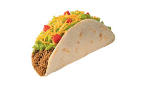

Tacos - Receita

Ingredientes
- 350g Carne moída
- 1 Tomate Picado (s/ sementes)
- 1 colher (sopa) Extrato de tomate
- 1 dente de alho (picado)
- 1 pimentão verde (pequeno) picado
- 1/2 chavena (chá) de bacon picado
- Salsicha e Cebolinha
- Paprica picante
- Pimenta Chipottle
Preparação
- Numa panela adicione o bacon e frite até começar a soltar gordura, junte e carne moída e frite rapidamente e adicione os temperos (alho, pimenta chipottle, pimenta do reino, paprica picante e sal) e deixe fritar até ficar bem sequinha
- Junte os outros ingredientes (extrato de tomate, milho, pimentão, tomate) misture e adicione cerca de 2 colheres (sopa) de água e deixe cozinhar até o tomate ficar murcho e a água secar bem.
- Espere o recheio esfriar um pouco e prepare como desejar e aproveite.